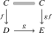

We will now axiomatize the pullback of two functors \(f\colon C \to E\) and \(g\colon D \to E\) of categories. This will be similar to the axiom for the product \(C \times D\), but it is more involved due to the fact that we need to record compatibilities with the structure maps to \(E\).
Definition 1.6.1. Consider two functors \(f\colon C \to E\) and \(g\colon D \to E\). Given a category \(T\), we define a cone diagram on \(T\) to be a triple \(c = (t_C,t_D,\tau)\) consisting of functors \(t_C\colon T \to C\) and \(t_D\colon T \to D\) together with an identification \(\tau\colon f \circ t_C = g \circ t_D\). In other words, a cone diagram consists of a commutative square of the form We call \(T\) the cone point of the diagram. Given another cone diagram \(c' = (t'_C,t'_D,\tau')\), an identification of cone diagrams \(c = c'\) is a triple \(\Phi\colon (\varphi_C,\varphi_D,H)\), where \(\varphi_C\colon t_C = t'_C\) and \(\varphi_D\colon t_D = t'_D\) are identifications, and \(H\) is an identification \[ \tau'\circ(f\star\varphi_C)=(g\star\varphi_D)\circ\tau. \] In particular, a comparison of cones needs to be compatible with the identifications forming the commutative square. In turn, if \(\Psi\colon (\psi_C,\psi_D,G)\) is another identification of cone diagrams \(c = c'\), we say that \(\Phi\) and \(\Psi\) are identified if there are identifications \(\varphi_C = \psi_C\) and \(\varphi_D = \psi_D\) under which \(H\) becomes identified with \(G\).
Given a functor \(s\colon S \to T\) and a cone diagram \(c = (t_C,t_D,\tau)\) on \(T\) we obtain another cone diagram \(s^*(c) := (t_C \circ s, t_D \circ s, \tau \ast \id_s)\) on \(S\). Similarly, every identification \(s_1 = s_2\) of functors \(S \to T\) induces an identification \(s^*_1(c) = s^*_2(c)\) of cone diagrams.
Axiom B.6 (Pullback of categories). For functors \(f\colon C\to E\) and \(g\colon D\to E\), there is a category \(C\times_E D\), called their pullback or fiber product, with projections \(\pr_1\colon C\times_E D\to C\) and \(\pr_2\colon C\times_E D\to D\), and an identification \(\tau_{\univ}\colon f\pr_1= g\pr_2\). Given \(a\colon T\to C\), \(b\colon T\to D\) and \(\tau\colon fa= gb\), there is a functor \((a,b)_\tau\colon T\to C\times_E D\) equipped with projection comparisons \(c\colon\pr_1(a,b)_\tau= a\) and \(d\colon\pr_2(a,b)_\tau= b\) and an identification \[ \tau\circ(f\star c)= (g\star d)\circ(\tau_{\univ}\star(a,b)_\tau). \] If \(C,D,E\) are animae, then \(C\times_E D\) is an anima.
For any \(h,k\colon T\to C\times_E D\), the projection-induced functor \[ (h= k)\longrightarrow (\pr_1 h=\pr_1 k) \times_{(f\pr_1 h= g\pr_2 k)} (\pr_2 h=\pr_2 k) \] is an equivalence; here the two functors defining the pullback on the right are \[ \alpha\longmapsto(\tau_{\univ}\star k)\circ(f\star\alpha), \qquad \beta\longmapsto(g\star\beta)\circ(\tau_{\univ}\star h). \] Interchange with \(\tau_{\univ}\) identifies their composites with the two projections from \((h= k)\) and thereby defines the displayed functor.
The final clause uses the pullback construction, now applied to three animae of identifications. In term notation the factorization is written \[ x:T\vdash(a(x),b(x))_{\tau(x)}:C\times_E D. \] The subscript may be omitted when it is clear from context, or left implicit to simplify notation. An identification between two such expressions is written \((\alpha(x),\beta(x))_{\eta(x)}\), where \(\eta\) is the identification between the two composites in the middle anima of identifications of the axiom.
The resulting map may be displayed as follows:
Definition 1.6.2 (Pullback square). A commutative square with matching identification \(\sigma\colon fp= gq\) is a pullback square, or is cartesian, if its induced functor \((p,q)_\sigma\colon P\to C\times_E D\) is an equivalence. We indicate this by putting the symbol \(\lrcorner\) in the square.
A pullback square has the same universal property as the chosen pullback: every cone factors through it with an identification of cone diagrams, and its animae of identifications are given by the displayed pullbacks of animae of identifications. Indeed, transfer the two clauses of the axiom through the equivalence \(P\to C\times_E D\), using Lemma 1.3.10. Conversely, these clauses construct inverse functors between \(P\) and the chosen pullback.
Note that any functor between two pullbacks of the same cospan that respects the projections and the specified identifications making the squares is an equivalence. Indeed, the induced functors to the chosen pullback are equivalences and form a commutative triangle with this functor, so the claim follows by two-out-of-three.
Proposition 1.6.3. A commutative square of categories is a pullback square if and only if applying \(\Map(T,-)\) gives a pullback square for every category \(T\).
Proof
We first show that applying \(\Map(T,-)\) to the chosen pullback \(C\times_E D\) results in a pullback square. Postcomposition with the two projections and whiskering with \(\tau_{\univ}\) gives a comparison functor \[ \Map(T,C\times_E D)\longrightarrow \Map(T,C)\times_{\Map(T,E)}\Map(T,D). \] For an inverse, let \(P\) be the anima on the right. Uncurrying the projections to \(\Map(T,C)\) and \(\Map(T,D)\) gives maps from \(P \times T\) to \(C\) and \(D\). Moreover, the identification in the commutative square for \(C \times_E D\) results in an identification of two functors \(P \times T \to E\). The pullback axiom thus supplies a functor from \(P \times T\) to \(C\times_E D\), with the projection comparisons and their compatibility with the squares. Currying gives a candidate inverse functor \(P \to \Map(T,C \times_D E)\).
To compare the composite on the right to the identity, we first do so on its two projections, where it follows by currying the identifications we just constructed. To show that the resulting two commutative squares are identified, we may again do so after uncurrying, where it follows from unwinding definitions.
For the composite on the left, we need to show its uncurrying agrees with the evaluation map. This can in turn be tested after both projections and comparing the commutativity identifications.
The claim now also follows for an arbitrary pullback square by considering the equivalence from its cone point to \(C\times_E D\).
Lemma 1.6.4. For functors \(C \to E\) and \(D \to E\), the functor \((\pr_{C}^{\simeq}, \pr_{D}^{\simeq})\colon (C \times_{E} D)^{\simeq} \to C^{\simeq} \times_{E^{\simeq}} D^{\simeq}\) is an equivalence.
Proof
This is a special case of Proposition 1.6.3.
Exercise 1.6.5 (Exercise 1.10.4). Show that the fiber product is commutative, associative and unital: for functors \(C\to \Gamma\), \(D \to \Gamma\) and \(B \to \Gamma\), there are preferred equivalences \[ C \times_{\Gamma} D \iso D \times_{\Gamma} C, \qquad B \times_{\Gamma} (C \times_{\Gamma} D) \iso (B \times_{\Gamma} C) \times_{\Gamma} D, \qquad C \times_{\Gamma} \Gamma \iso C. \]
Exercise 1.6.6 (Exercise 1.10.5). Consider categories \(C\) and \(D\), and let \(p_C\colon C \to *\) and \(p_D\colon D \to *\) be their functors to the terminal category. Show that the functor \((\pr_1,\pr_2)\colon C \times_* D \to C \times D\) is an equivalence.
Construction 1.6.7. The construction of pullbacks of categories is functorial: given a commutative diagram there is an induced functor \[ \varphi \times_{\chi} \psi := (\varphi \circ \pr_1, \psi \circ \pr_2)\colon C \times_{\Gamma} D \to C' \times_{\Gamma'} D'. \]
Exercise 1.6.8. In the above situation, show that if each of the functors \(\varphi\), \(\psi\) and \(\chi\) is an equivalence, then so is \(\varphi \times_{\chi} \psi\).
Corollary 1.6.9. Equivalences are closed under pullback: if \(g\colon D \to E\) is an equivalence and \(f\colon C \to E\) is an arbitrary functor, then also \(C \times_{E} D \to C\) is an equivalence.
Proof
This is a special case of Exercise 1.6.8 by taking \(C' = C\), \(\Gamma = \Gamma' = E\), \(D' = E\), \(\varphi = \id_{C}\), \(\chi = \id_{E}\) and \(\psi = g\): this exhibits the projection \(C \times_{E} D \to C\) as the composite of the equivalence \(\varphi \times_{\chi} \psi \colon C \times_{E} D \to C \times_{E} E\) with the unitality equivalence \(C \times_{E} E \iso C\) from Exercise 1.6.5.
1.6.1 Fibers of functors
Pullbacks of categories lead to the notion of a fiber of a functor:
Definition 1.6.10 (Fiber). Let \(f\colon C \to D\) be a functor and let \(x\colon *\to D\) be an absolute object. We define the fiber of \(f\) over \(x\) as the pullback
One particular case is the fiber of a map \(b\colon * \to C\) over some object \(a\colon * \to C\). The absolute terms of this fiber can be identified with identifications \(\alpha\colon a = b\). We impose as an axiom that the same holds in families:
Axiom B.7 (Representability of identifications). For every category \(C\) and absolute objects \(a,b \in C\), there is an identification \[ \varepsilon:\const_a=\const_b \] of functors \((a=b) \to C\) such that the square is a pullback, with commutativity identification given by \(\varepsilon\). For every identification \(\alpha:a=b\), we require a specified identification \[ \varepsilon(\alpha)=\alpha. \] Here \(\varepsilon(\alpha)\) denotes the identification obtained by prewhiskering \(\varepsilon\) with \(\alpha\colon *\to(a=b)\) and using the terminal-category comparisons to identify \(\const_a\circ\alpha\) with \(a\) and \(\const_b\circ\alpha\) with \(b\).
For a functor \(u\colon T\to(a=b)\), the corresponding identification between the constant functors \(T\to C\) is obtained by prewhiskering \(\varepsilon\) with \(u\), using the terminal-category comparisons to identify its source and target.
1.6.2 Properties of pullback squares
Lemma 1.6.11 (Pasting lemma for pullback squares). Consider a commutative diagram
(1) There is a preferred equivalence \(D_1 \times_{D_3} C_3 \iso D_1 \times_{D_2} (D_2 \times_{D_3} C_3)\).
(2) If the right-hand square is a pullback square, then the left-hand square is a pullback square if and only if the outer rectangle is a pullback square.
Proof
For part (1), we define the functor as \((\pr_1, (h_1 \circ \pr_1, \pr_2))\). We claim that an inverse is given by the functor \[ (\pr_1, \pr_2 \circ \pr_2)\colon D_1 \times_{D_2} (D_2 \times_{D_3} C_3) \to D_1 \times_{D_3} C_3. \] To show that the two composites are identified with the respective identities, it suffices to construct these identifications after projecting to the two components and verifying that these identifications agree after composing with the functors to \(D_3\). But after unwinding the definitions, this holds tautologically by the very construction of the two functors in both directions.
Part (2) is an immediate consequence of the 2-out-of-3 property from Lemma 1.3.6 applied to the following commutative square: where the right vertical map is an equivalence by applying Exercise 1.6.8 to the equivalence \(C_2 \iso D_2 \times_{D_3} C_3\).
Lemma 1.6.12. Consider a commutative square and assume that \(h\) is an equivalence. Then \(g\) is an equivalence if and only if the square is a pullback square.
Proof
Since \(h\) is an equivalence, also the projection map \(\pr_2\colon D \times_{F} E \to E\) is an equivalence by Corollary 1.6.9. Since the composite of the map \((f,g) \colon C \to D \times_{F} E\) with \(\pr_2\) is identified with \(g\), the claim follows from the 2-out-of-3 property of equivalences, Lemma 1.3.6.
Lemma 1.6.13. Consider functors \(f\colon C \to E\) and \(g\colon D \to E\). Then the commutative square is a pullback square.
Proof
This follows immediately from the pasting lemma for pullback squares, Lemma 1.6.11, applied to the following commutative diagram:
1.6.3 Universality of coproducts
The strictness of the initial category immediately implies its universality:
Lemma 1.6.14. For every functor \(g\colon D \to E\), the commutative square is a pullback square.
Proof
We need to show that the induced map \(\emptyset \to \emptyset \times_E D\) is an equivalence. But this follows directly from Axiom B.4' by applying 2-out-of-3 to the maps \(\emptyset \to \emptyset \times_E D \xrightarrow{\pr_1} \emptyset\).
We now postulate a analogous universality property on coproducts of categories:
Axiom B.5' (Universality of coproducts). Consider categories \(\Gamma_0\) and \(\Gamma_1\), define \(\Gamma := \Gamma_0 \sqcup \Gamma_1\), and let \(i_0\colon \Gamma_0 \to \Gamma\) and \(i_1\colon \Gamma_1 \to \Gamma\) denote the two inclusions.
(1) For functors \(f\colon C \to \Gamma_0\) and \(g\colon D \to \Gamma_1\), the commutative squares are pullback squares.
(2) For a functor \(h\colon E \to \Gamma\), the functor \[ \lra{\pr_1,\pr_1} \colon (E \times_{\Gamma} \Gamma_0) \sqcup (E \times_{\Gamma} \Gamma_1) \to E \] is an equivalence.
Corollary 1.6.15 (Disjointness of coproducts). Coproducts are disjoint: for categories \(C\) and \(D\), the commutative square is a pullback square.
Lemma 1.6.16. For functors \(f\colon C \to \Gamma\), \(g\colon D \to \Gamma\) and \(\varphi\colon \Gamma' \to \Gamma\), the commutative square is a pullback square.
Proof
We need to show that the induced functor \[ (C \times_{\Gamma} \Gamma') \sqcup (D \times_{\Gamma} \Gamma') \to (C \sqcup D) \times_\Gamma \Gamma' \] is an equivalence. But this is a special case of Axiom B.5' applied to the functor \(f = \pr_1\colon (C \sqcup D) \times_\Gamma \Gamma' \to C \sqcup D\): by the pasting law of pullback squares there are equivalences \[ C \times_{C \sqcup D} (C \sqcup D) \times_\Gamma \Gamma' \simeq C \times_\Gamma \Gamma' \qquadtext{ and } D \times_{C \sqcup D} (C \sqcup D) \times_\Gamma \Gamma' \simeq D \times_\Gamma \Gamma'. \] This finishes the proof.
Corollary 1.6.17 (Distributivity). For categories \(C\), \(D\) and \(E\), the functor \[ \lra{E \times i_C, E \times i_D} \colon E \times C \sqcup E \times D \to E \times (C \sqcup D) \] is an equivalence.
Proof
This is an instance of the previous lemma by taking \(\Gamma = *\), \(\Gamma' = E\), \(f = p_C\colon C \to *\), \(g = p_D\colon D \to *\), and \(\varphi = p_{E}\colon E \to *\).
Consequently, expressions with an additional parameter \(t:T\) may be defined by cases: combine the functors \(T\times C\to E\) and \(T\times D\to E\) by copairing, then precompose with the inverse of distributivity. Their restriction comparisons are the comparisons of the resulting expression on the two summands.
Lemma 1.6.18. The following two conditions are equivalent:
(1) The category \(* \sqcup *\) is contractible;
(2) Every category is contractible.
Proof
It is clear that (2) implies (1). Conversely, assume that \(* \sqcup *\) is contractible, i.e. that the map \(* \sqcup * \to *\) is an equivalence. Since this map admits a section given by the left inclusion \(l\colon * = * \sqcup \emptyset \hookrightarrow * \sqcup *\), it follows that \(l\) is an equivalence. In particular, its fiber over the right point must be contractible. Since this fiber is the empty category \(\emptyset\) by Corollary 1.6.15, we see that the map \(\emptyset \to *\) is an equivalence, and it follows from taking the product with any category \(C\) that also \(\emptyset \to C\) is an equivalence. By 2-out-of-3 this implies that \(C\) is contractible.
1.6.4 Embeddings of categories
We introduce the notion of embeddings of categories and prove basic properties about them. We will eventually see that embeddings precisely correspond to subcategories, see Proposition 6.4.5.
Definition 1.6.19 (Embedding). A functor \(f\colon C \to D\) is called an embedding if the diagonal \(\Delta_f := (\id_{C},\id_{C})\colon C \to C \times_{D} C\) is an equivalence, or equivalently if the commutative diagram is a pullback square.
Proposition 1.6.20. A functor \(f\colon C \to D\) is an embedding if and only if for every category \(E\) the induced map \(f_*\colon \Map(E,C) \to \Map(E,D)\) is an embedding.
Proof
This follows immediately from Proposition 1.6.3 by considering the commutative diagram
Corollary 1.6.21. Given an embedding \(f\colon C \to D\), the functor \(f^{\simeq} \colon C^{\simeq} \to D^{\simeq}\) is also an embedding.
Proof
In light of the definition of embeddings, this is immediate from Lemma 1.6.4.
Lemma 1.6.22. A functor \(f\colon C \to D\) is an embedding if and only if the commutative square is a pullback square.
Proof
By Lemma 1.6.13 the pullback of this diagram is \(C \times_D C\). Since the induced map \(C \to C \times_D C\) is precisely the diagonal \(\Delta_f\colon C \to C \times_D C\) of \(f\), the claim follows.
Lemma 1.6.23. Consider a pullback square of categories. If \(v\) is an embedding, then also \(u\) is an embedding.
Proof
This is left as an exercise for the reader, see Exercise 1.10.10
Lemma 1.6.24. Let \(f\colon C \to D\) be an embedding which admits a section \(s\colon D \to C\). Then \(f\) is an equivalence.
Proof
As \(fs = \id_D\), it remains to show that \(sf = \id_C\). Consider the following commutative diagram: Since the right square is a pullback square by assumption on \(f\), there exists a map \(h \colon C \to C\) making the diagram commute. It follows that \(sf = h = \id_C\), finishing the proof.
We will now prove some more intricate properties about embeddings, which may be skipped on first reading and referred back to whenever needed.
Lemma 1.6.25. Let \(f\colon C \to D\) and \(g\colon D \to E\) be functors and assume that \(g\) is an embedding. Then the square

Proof
This is immediate from the pasting law of pullback squares applied to the following commutative diagram: Indeed, the bottom square is a pullback square by assumption on \(g\), while the top square is clearly a pullback square.
Lemma 1.6.26. Consider a commutative triangle of functors. If \(g\) is an embedding, then \(f\) is an embedding if and only if \(gf\) is an embedding.
Proof
Consider the following commutative diagram: Since \(g\) is an embedding, the right square is a pullback square by Lemma 1.6.25. It follows from the pasting law of pullback squares, Lemma 1.6.11, that the left square is cartesian if and only if the outer rectangle is cartesian, proving the claim.
Corollary 1.6.27. Consider a commutative diagram of functors such that \(v\) is an embedding. Then \(u\) is an embedding if and only if the induced map \((f,u)\colon A \to B \times_D C\) is an embedding.
Proof
The map \(u\colon A \to C\) factors as the composite \(A \xrightarrow{(f,u)} B \times_D C \xrightarrow{\pr_2} C\). The map \(\pr_2\) is an embedding by Lemma 1.6.23, and hence the statement follows from Lemma 1.6.26.
Lemma 1.6.28. Consider a commutative diagram If \(v\) and \(w\) are embeddings and the composite square is a pullback square, then also the top square is a pullback square.
Proof
Consider the following commutative diagram: Since \(w\) is an embedding, the map \(E' \times_E D \to D\) is an embedding by Lemma 1.6.23. Since \(v\colon D' \to D\) is also an embedding, it thus follows from Lemma 1.6.26 that the map \((g',v)\colon D' \to E' \times_E D\) is an embedding, and thus by Lemma 1.6.25 the top left square is a pullback square. Since the right bottom square and right outer rectangle are pullback squares, so is the top right square by the pasting law Lemma 1.6.11. Another instance of Lemma 1.6.11 shows that the outer rectangle is a pullback square, as desired.